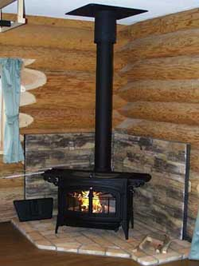
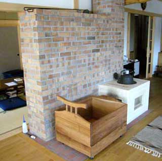
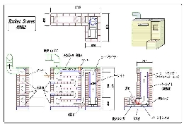

なぜ今 ロケットストーブなのか‥
バーモンドキャスティング アンコール
2010年の震災後、毎日のように ”これからのエネルギーをどのように確保していくべきか” と テレビの声。 ここ長野県でも、少しでも自然エネルギーを活用するべく薪ストーブを設置する家が多くなってきているようです。
我が家では、10年以上前にログハウスを建てた時から、薪ストーブが家の暖房として活躍してくれています。バーモンドキャスティングのアンコールといえば 薪ストーブの中でもなかなかのスグレモノ。使い勝手から暖房能力までまず不足は感じられません。
ですが、-5°C～-10°Cの日が続く真冬の長野では、薪の消費量はかなりのものです。家業が家具屋でも、端材だけではとうてい足りず、軽トラで買いに行きます。
そんな折ある知人から、薪の消費量が、薪ストーブの半分か1/3であたたまるストーブがあるらしい‥ また別の知人は、すでに試しに作り始めた‥ そうこうしているうちにさらに別の知人は、本格的設計し、まもなくできあがりそう‥
ウーン これはちょっと じっとしていられない‥。これがロケットストーブとの出会いでした。
ロケットストーブってなに？
そもそもロケットストーブって薪ストーブと何がちがうのか？ ストーブは十分な吸気がされなければ燃えません。薪ストーブは煙突の高温ガスの上昇気流によって吸気がされます。なのでせっかく燃料を燃やして作った熱い空気を煙突から捨てることで燃焼を維持しているのです。
それに対して、ロケットストーブは、吸気させるための、上昇気流を生み出す煙突に相当する仕組み（ヒートライザー）をストーブ本体の中に設け、その先に、温められた空気から熱を蓄熱させるための、道（部屋）を作ることによって、作り出した熱をしっかり使い切るのです。なので、最後の煙突から出る煙は、薪ストーブのそれよりはるかに低い温度となるはずです。また、ヒートライザーを断熱し高温に保つことで、薪を完全燃焼させ、さらに熱効率を高められるというしくみです。その結果薪の消費量がかなり少なくて済むようになるというのですが、それは実際にでき上がってみなければなんとも‥
詳しくは ”日本ロケットストーブ普及協会”発行のマニュアル本に原理から作り方まで解説されているので、とても参考になります。興味のある方にはオススメですよ。
それでは、どのようなロケットストーブを作ろうか？
(有)有賀製材所製ペチカ
ロケットストーブには決まった形や完全な仕組みというのはまだ確立されていないようです。逆に言うとまだまだアイデア次第でいろいろなバリエーションが作れそう。実際にこれまでにも蓄熱部分がベンチになっているタイプや小型の料理用のもの、中にはお風呂を沸かすためのものまで‥
では自分としてはどのようなタイプのロケットストーブを作ろうか？もともとロシア生まれのストーブにペチカというものがあります。付き合いのある伊那市の建築製材会社(有)有賀製材所さんがこのペチカを備えた家を数多く手がけています。そこで何度もその暖かさを体感しているのですが、とにかく柔らかい暖かさが家全体に広がり、なんとも心地の良い空間なのです。写真のように、レンガによって多くの熱を蓄えられるので、鋳物製の薪ストーブより熱効率はいいのだとか。このペチカ、やはり吸気は煙突によるものです。
そんなこんなで、このペチカのような暖かさで、燃焼方式はロケットストーブ というのを考えてみました。

右の概略図のように、焚口からヒートライザーまではロケットストーブ。その先の蓄熱する部分は、ペチカのレンガでできた壁のような形。ただ、蓄熱体の中の煙の通り道の構造はペチカとは異なり、下からジグザグに上がっていきます。果たして900mmのヒートライザーで、このジグザグ道を上っていけるかどうか、まさに作って焚いてみなければわかりません。なんの確証もなく始まったロケットストーブ作り。うまく燃えなければ、ただのベルリンの壁になってしまうはめに‥ どうしよう‥
{kind=link}
ロケットストーブ作りは、 ロバの家具やのブログの中でも紹介しています。ぜひのぞいてみてください。
ロバの家具やのブログの中でも紹介しています。ぜひのぞいてみてください。